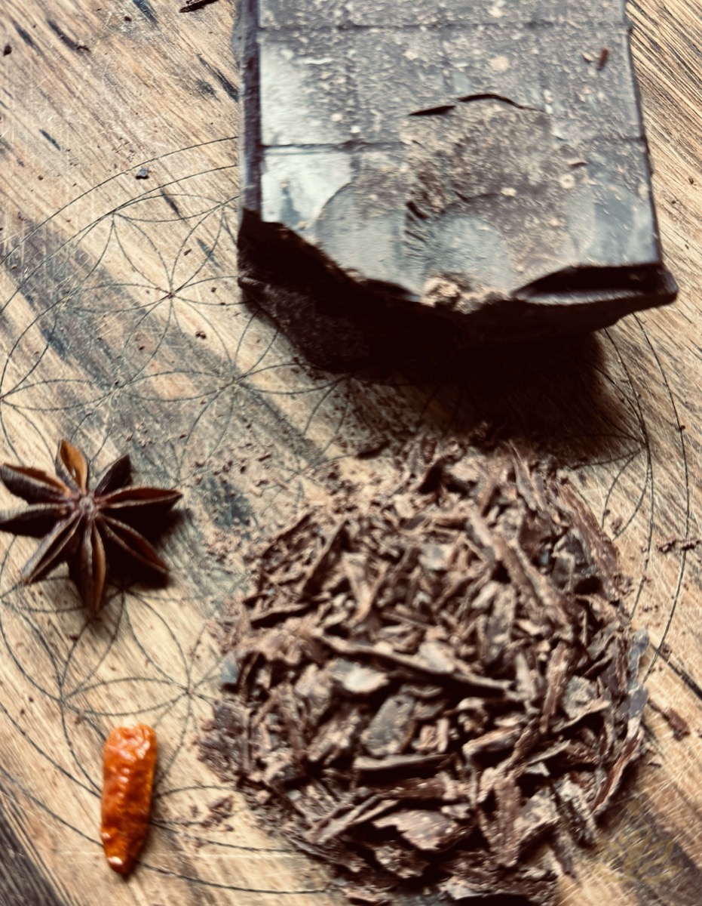

BEWUSSTSEINSWORKSHOP MIT KAKAOZEREMONIE
Kakao-Kreis.Bei dir ankommen.
Dem Herzen Raum geben.
Bewusst durch die Dezemberzeit.

- Wann
- Freitag, 18. Dezember 2026
17:00–20:00 Uhr - Wo
- Seminarhaus am Eckhof
Murbergstraße 155 · 8072 Mellach - Dein Beitrag
- 87 € pro Person
Inklusive zeremoniellem Kakao - Unser Kreis
- Persönlich begleitet von Daniela
Durchführung ab sieben Teilnehmenden
Eine bewusste Auszeit im Dezember
Die Dezemberzeit lädt uns ein, innezuhalten und die Aufmerksamkeit nach innen zu richten. In diesem Kreis nehmen wir uns bewusst Zeit, uns zu zentrieren und unseren Herzensthemen Raum zu geben.
Mit hochwertigem, zeremoniellem Kakao, achtsamen Ritualen und persönlich begleiteter Bewusstseinsarbeit stimmen wir uns auf diese Zeit ein. Eine persönliche Intention gibt dir Orientierung: Was bewegt mich gerade? Was möchte ich stärken? Was darf sich verändern?
Im achtsamen Miteinander dürfen Gedanken und Gefühle sichtbar werden und neue Perspektiven entstehen. Ich begleite euch mit Feingefühl und meinen unterschiedlichen Zugängen. Du darfst teilen, nachspüren oder still dabei sein – in deinem Tempo und ohne etwas leisten zu müssen.
Was dich erwartet
- Gemeinsames Ankommen und bewusstes Zentrieren.
- Zeremonieller Kakao und Raum für deine persönliche Intention.
- Individuell angeleitete Bewusstseinsarbeit und achtsame Rituale.
- Zeit für Nachspüren, freiwilligen Austausch und einen gemeinsamen Abschluss.
Die drei Stunden geben uns Zeit für den Prozess und für das, was sich in unserem Kreis zeigen möchte.
Anmeldung, Zahlung & Absage
Du meldest dich per E-Mail an. Sobald dein Platz und die Durchführung feststehen, bestätige ich dir deine Teilnahme persönlich. Mit meiner Bestätigung wird deine Anmeldung verbindlich.
- Beitrag: 87 € inklusive zeremoniellem Kakao. Nach meiner Bestätigung überweist du eine Anzahlung von 43,50 €. Die übrigen 43,50 € bezahlst du vor Ort. Die Kontodaten erhältst du persönlich mit der Bestätigung.
- Kostenlose Absage: bis Freitag, 11. Dezember 2026, 17:00 Uhr, per E-Mail. Eine bereits geleistete Anzahlung wird zurückerstattet.
- Spätere Absage oder Nichterscheinen: 43,50 € Stornogebühr. Eine bereits geleistete Anzahlung wird darauf angerechnet.
- Ersatzperson: Wenn du eine Ersatzperson benennst oder dein Platz anderweitig vergeben wird, entfällt die Stornogebühr.
- Absage durch mich: Sollte der Workshop nicht stattfinden, etwa weil die Mindestanzahl von sieben Teilnehmenden nicht erreicht wird, erhältst du bereits bezahlte Beträge vollständig zurück.
Gesetzliche Rücktrittsrechte bleiben von diesen Bedingungen unberührt.
Deinen Platz anfragen
Fülle die kurzen Angaben aus. Danach kannst du die vorbereitete Anmeldung in deinem E-Mail-Programm öffnen und an mich senden. Eine Buchung oder Zahlung wird hier noch nicht automatisch ausgelöst.
87 € gesamt · 43,50 € Anzahlung nach Bestätigung · 43,50 € vor Ort.
Kostenlose Absage bis 11. Dezember, 17 Uhr. Danach 43,50 € Stornogebühr; bei Ersatz entfällt sie. Alle Bedingungen oben nachlesen.
Anmeldung vorbereitet
Es wurde noch nichts versendet. Öffne jetzt dein E-Mail-Programm und sende die vorbereitete Nachricht an Daniela.
E-Mail öffnen & selbst sendenNachricht ansehen oder kopieren
Informationen zur Datenverarbeitung
Verantwortlich ist Daniela Kellner, Buchkogelstraße 46/2, 8072 Fernitz-Mellach, daniela@shiatsu-kellner.at. Die Formulareingaben werden hier nicht serverseitig gespeichert. Sie werden auf deinem Gerät in eine E-Mail umgewandelt, die du selbst versendest.
Nach dem Versand verwende ich deine Angaben zur Bearbeitung deiner Anmeldung, zur Kommunikation über die Veranstaltung und bei zustande gekommener Buchung zur Vertragsabwicklung. Rechtsgrundlage sind die vorvertraglichen Maßnahmen beziehungsweise die Vertragserfüllung. Nicht mehr erforderliche Angaben werden gelöscht; gesetzliche Aufbewahrungspflichten bleiben unberührt. Du kannst dich bei mir wegen Auskunft, Berichtigung, Löschung oder Einschränkung der Verarbeitung und Datenübertragbarkeit melden. Du hast außerdem ein Beschwerderecht bei der österreichischen Datenschutzbehörde.

Fragen? Schreib mir an daniela@shiatsu-kellner.at oder ruf mich an: +43 664 1034409.